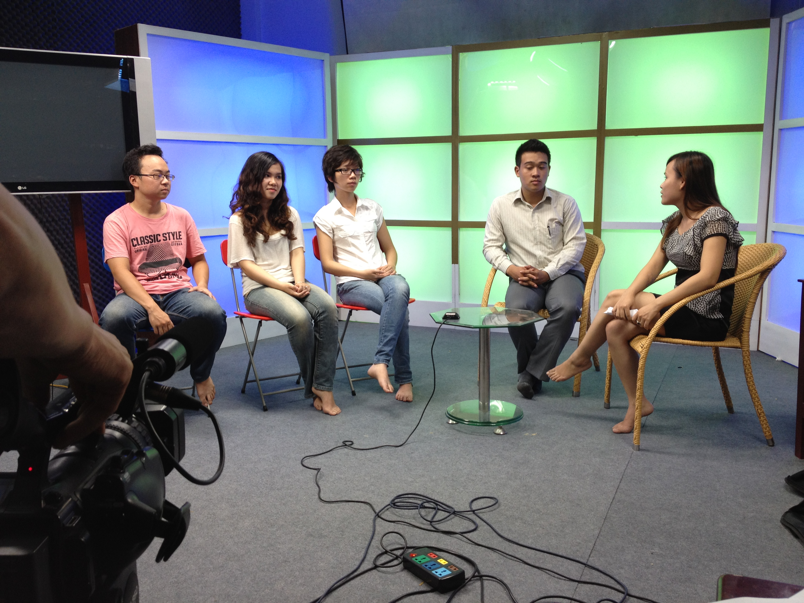
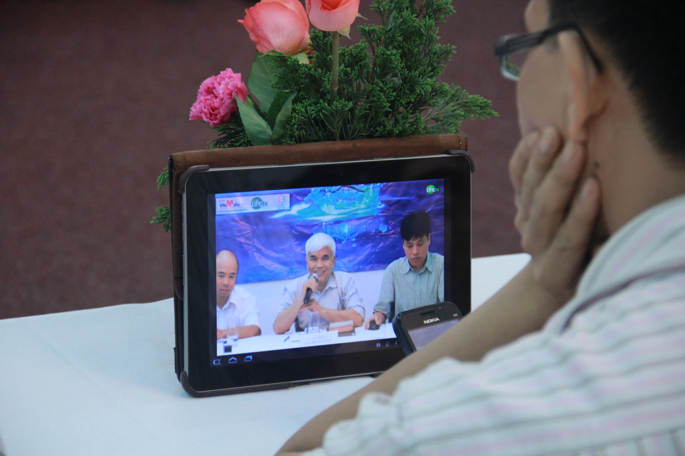
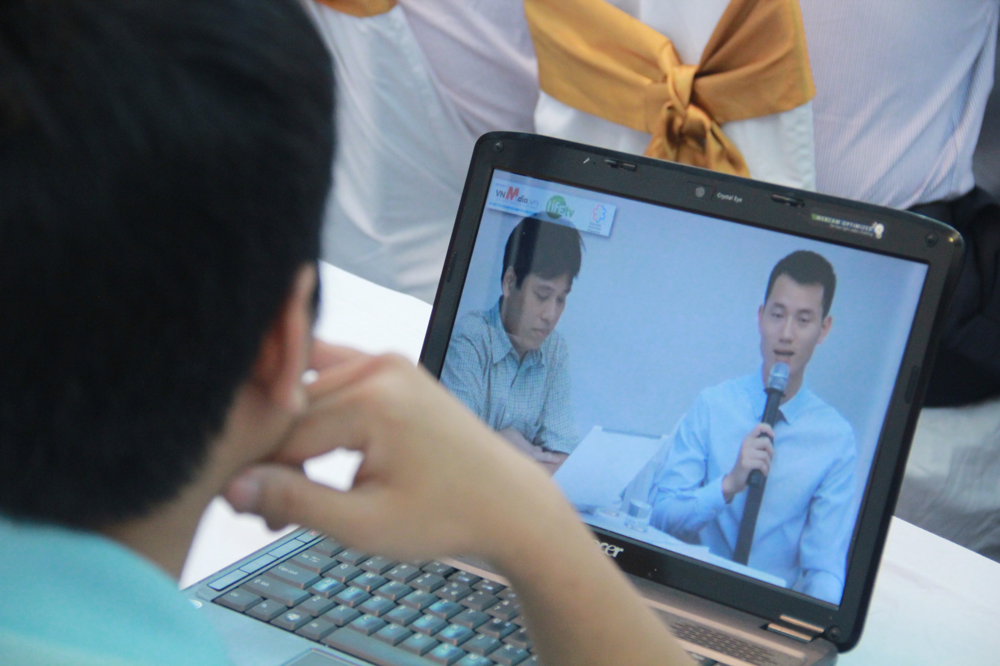
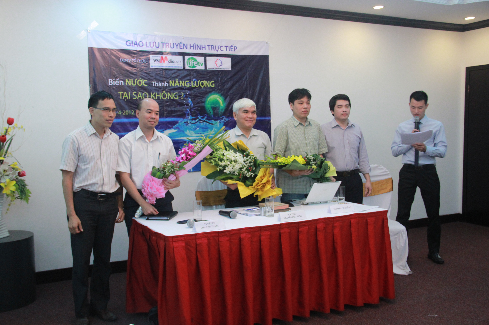
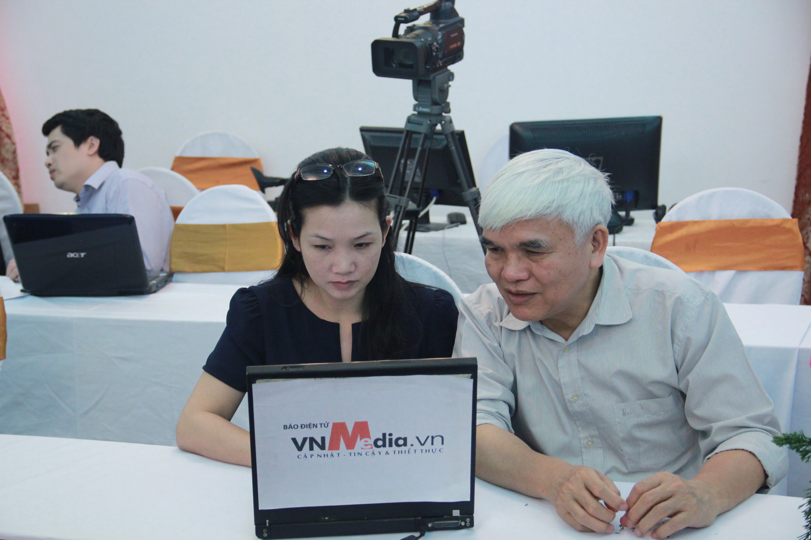

Dấu ấn tiên phong phát sóng trực tiếp năm 2011
Vào năm 2011, khi công nghệ phát sóng trực tiếp (Livestream) tại Việt Nam vẫn còn là khái niệm mới mẻ với vô vàn rào cản về băng thông mạng và thiết bị mã hóa phần cứng, AnhNgocInc đã được tin tưởng giao trọng trách kiến trúc toàn bộ hệ thống phát sóng trực tiếp cho kênh truyền thông LifeTV.
Dự án đòi hỏi sự phối hợp khắt khe giữa kỹ thuật truyền dẫn mạng viễn thông, thiết lập trường quay ánh sáng lạnh, đồng bộ tín hiệu máy quay đa góc (Multicam Switching) và xây dựng trạm dựng thời gian thực.
📡 Thách thức & Giải pháp công nghệ thời kỳ đầu
Để đảm bảo luồng streaming chuẩn SD/HD không bị giật lag với hạ tầng mạng Internet ADSL năm 2011, hệ thống đã áp dụng giải pháp nén video phần cứng chuyên dụng, cân bằng tải mạng đa luồng và thiết kế giao diện tương tác người xem trực tuyến lần đầu tiên xuất hiện.
Hạng mục chuyển giao & Đào tạo
Lắp đặt trạm điều khiển Master Control Room (MCR)
Thiết lập bàn chuyển mạch hình ảnh (Video Switcher), hệ thống Intercom liên lạc nội bộ giữa đạo diễn và các tay máy trường quay.
Setup ánh sáng trường quay & Phông xanh Chroma Key
Hệ thống đèn huỳnh quang lạnh chuyên dụng và đèn Kino Flo đảm bảo phông xanh phẳng đều, không bóng đổ phục vụ việc bóc tách kỹ xảo thời gian thực.
Đào tạo chuyển giao nghiệp vụ kỹ thuật viên
Trực tiếp huấn luyện đội ngũ kỹ thuật viên của LifeTV làm chủ quy trình phát sóng on-air, xử lý sự cố rớt mạng và vận hành hệ thống trơn tru.
Thư viện hình ảnh dự án LifeTV (15 Khung hình tư liệu)
Tư liệu quá trình khảo sát, lắp đặt máy móc và nghiệm thu trường quay LifeTV:
.jpg)
.jpg)
.jpg)
.jpg)
.jpg)
.jpg)
.jpg)




